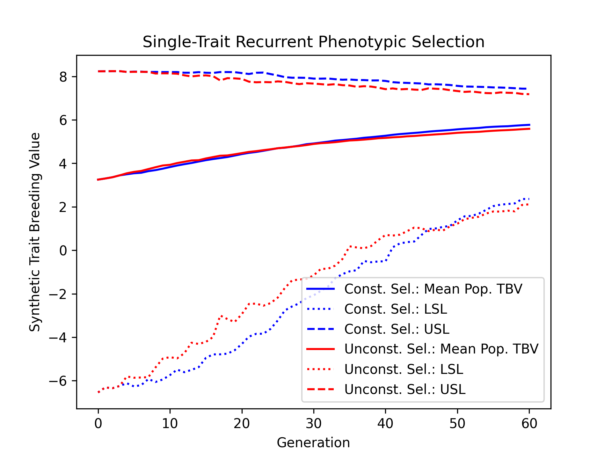
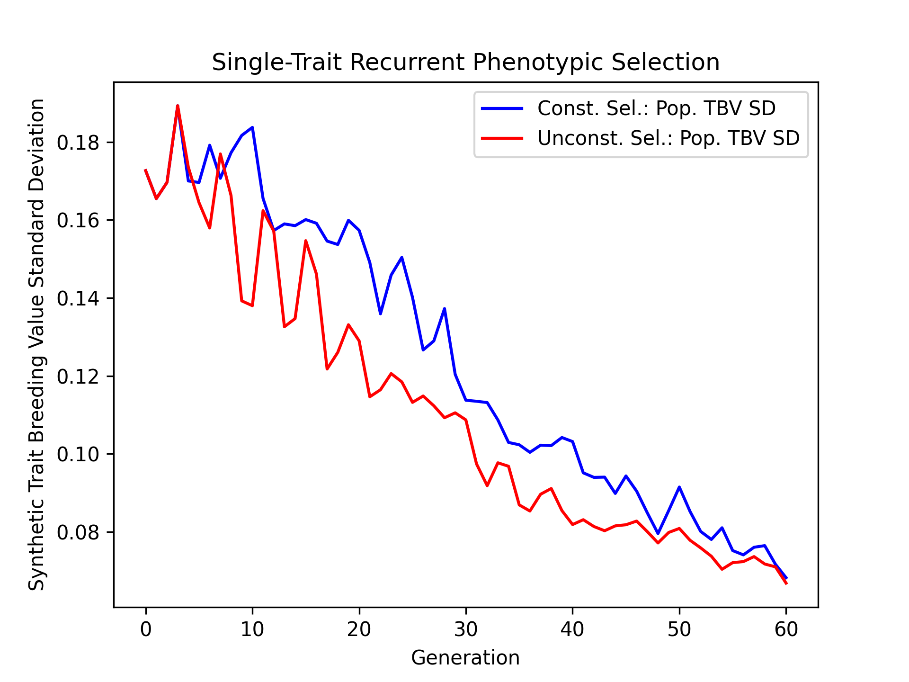

Constrained Single-Trait Phenotypic Selection#
In the Single-Trait Phenotypic Selection example, we conducted a simulation where we selected the top individuals based on their estimated breeding values. Unfortunately, this “greedy” selection strategy quickly depletes genetic diversity, leading to poorer genetic gains in the long run. One method to combat the depletion of genetic diversity is to add an inbreeding constraint. Instead of selecting the top individuals, we select the top individuals given that their mean relatedness does not exceed a specific value. In the example below, we perform both constrained and unconstrained selection and compare their long-term effects using simulations.
Simulation Preliminaries#
Loading Required Modules and Seeding the global PRNG#
To begin, we import the various modules we will be used into the Python namespace. We also set the seed for our simulation so that we can replicate the results at a later time.
# import libraries
from numbers import Real
import numpy
import pandas
import pybrops
from matplotlib import pyplot
from pybrops.breed.prot.bv.MeanPhenotypicBreedingValue import MeanPhenotypicBreedingValue
from pybrops.breed.prot.mate.TwoWayCross import TwoWayCross
from pybrops.breed.prot.mate.TwoWayDHCross import TwoWayDHCross
from pybrops.breed.prot.pt.G_E_Phenotyping import G_E_Phenotyping
from pybrops.breed.prot.sel.EstimatedBreedingValueSelection import EstimatedBreedingValueSubsetSelection
from pybrops.breed.prot.sel.OptimalContributionSelection import OptimalContributionSubsetSelection
from pybrops.model.gmod.DenseAdditiveLinearGenomicModel import DenseAdditiveLinearGenomicModel
from pybrops.opt.algo.SortingSubsetOptimizationAlgorithm import SortingSubsetOptimizationAlgorithm
from pybrops.opt.algo.SteepestDescentSubsetHillClimber import SteepestDescentSubsetHillClimber
from pybrops.popgen.bvmat.DenseBreedingValueMatrix import DenseBreedingValueMatrix
from pybrops.popgen.cmat.fcty.DenseMolecularCoancestryMatrixFactory import DenseMolecularCoancestryMatrixFactory
from pybrops.popgen.gmap.HaldaneMapFunction import HaldaneMapFunction
from pybrops.popgen.gmap.StandardGeneticMap import StandardGeneticMap
from pybrops.popgen.gmat.DensePhasedGenotypeMatrix import DensePhasedGenotypeMatrix
# seed python random and numpy random
pybrops.core.random.prng.seed(52347529)
Loading Genetic Map Data from a Text File#
Next, we load genetic map data from a CSV-like file. In this example, we are using the US NAM genetic map constructed by McMullen et al. in 2009. The code below demonstrates how these data are read into a StandardGeneticMap object using the from_csv class method.
# read genetic map
gmap = StandardGeneticMap.from_csv(
"McMullen_2009_US_NAM.gmap",
vrnt_chrgrp_col = "chr",
vrnt_phypos_col = "pos",
vrnt_genpos_col = "cM",
vrnt_genpos_units = "cM",
auto_group = True,
auto_build_spline = True,
sep = "\t",
header = 0,
)
Creating a Genetic Map Function#
After loading our genetic map data, we want to create a genetic map function object which will be used to calculate recombination probabilities for our simulations. We create a simple Haldane genetic map function using the HaldaneMapFunction class.
# use Haldane map function to calculate crossover probabilities
gmapfn = HaldaneMapFunction()
Loading Genome Data from a VCF File#
Next, we load phased genetic markers from a VCF file. In this example, we are using a subset of genetic markers from the Wisconsin Maize Diversity Panel, which is composed of 942 individuals. 2000 SNPs with a minor allele frequency greater than 0.2 have been randomly selected to keep the dataset small.
# read phased genetic markers from a vcf file
panel_pgmat = DensePhasedGenotypeMatrix.from_vcf(
"widiv_2000SNPs.vcf.gz", # file name to load
auto_group_vrnt = True, # automatically sort and group variants
)
After loading the genetic markers, we interpolate the genetic map positions and the sequential marker crossover probabilities using the interp_xoprob method. We interpolate using the genetic map and genetic map function we have just created.
# interpolate genetic map positions
panel_pgmat.interp_xoprob(gmap, gmapfn)
Constructing a Single-Trait Genomic Model#
Next, we want to construct a true genomic model that will model a single trait with a strictly additive genetic architecture. We construct a DenseAdditiveLinearGenomicModel object to do this.
# model intercepts: (1,ntrait)
beta = numpy.array([[0.0]], dtype = float)
# marker effects: (nvrnt,1)
mkreffect = numpy.random.normal(
loc = 0.0,
scale = 0.05,
size = (panel_pgmat.nvrnt,1)
)
# trait names: (ntrait,)
trait = numpy.array(["Syn1"], dtype = object)
# create an additive linear genomic model to model traits
algmod = DenseAdditiveLinearGenomicModel(
beta = beta, # model intercepts
u_misc = None, # miscellaneous random effects
u_a = mkreffect, # random marker effects
trait = trait, # trait names
model_name = "synthetic_model", # name of the model
hyperparams = None # model parameters
)
Simulation Burn-in#
In this next major step, we’ll perform a burn-in to create a breeding population from which to start our breeding simulations.
Select founders and randomly intermate for 20 generations#
Before we begin our simulation, we’ll want to do a burn-in to create a randomly mating population from which to start. In the code below, we randomly select 40 founders from the individuals in the diversity panel and conduct random mating for 20 generations to simulate the creation of an open pollinated variety. After the 20 generations of random mating, we create doubled haploids from the population to serve as our starting breeding population for our simulation.
# founder population parameters
nfndr = 40 # number of random founders to select (must be even)
fndr_nmating = 1 # number of times to perform cross configuration (only needed for 3+ way crosses)
fndr_nprogeny = 80 # number of progenies to derive from cross configuration
fndr_nrandmate = 20 # number of random mating generations
# create 2-way cross object
mate2way = TwoWayCross()
# randomly select and pair ``nfndr`` founders
xconfig = numpy.random.choice(panel_pgmat.ntaxa,nfndr).reshape(nfndr//2,2)
# randomly intermate ``nfndr`` founders to create initial hybrids
fndr_pgmat = mate2way.mate(
pgmat = panel_pgmat,
xconfig = xconfig,
nmating = fndr_nmating,
nprogeny = fndr_nprogeny,
)
# randomly intermate for ``fndr_nrandmate`` generations
# each individual in the population is randomly mated with another individual
# and creates a single progeny so that the population size is held constant
for _ in range(fndr_nrandmate):
# get the number of taxa
ntaxa = fndr_pgmat.ntaxa
# randomly select and pair ``ntaxa`` parents
xconfig = numpy.empty((ntaxa,2), dtype = int)
xconfig[:,0] = numpy.random.choice(ntaxa, ntaxa, replace = False)
xconfig[:,1] = numpy.random.choice(ntaxa, ntaxa, replace = False)
# randomly intermate ``ntaxa`` parents
fndr_pgmat = mate2way.mate(
pgmat = fndr_pgmat,
xconfig = xconfig,
nmating = 1,
nprogeny = 1,
)
# create a 2-way DH cross object, use the counters from the 2-way cross object
mate2waydh = TwoWayDHCross(
progeny_counter = mate2way.progeny_counter,
family_counter = mate2way.family_counter,
)
# get the number of taxa
ntaxa = fndr_pgmat.ntaxa
# randomly select and pair 20 parents
xconfig = numpy.random.choice(ntaxa, 40, replace = False).reshape(20,2)
# DH all individuals in the founder population to create our initial breeding population
fndr_pgmat = mate2waydh.mate(
pgmat = fndr_pgmat,
xconfig = xconfig,
nmating = 1,
nprogeny = 80,
)
Simulation Setup#
Create a Phenotyping Protocol Object#
After creating our starting breeding population, we’ll create a phenotyping protocol object to phenotype the individuals in our population. We’ll create a \(G + E\) phenotyping protocol that simulates the phenotyping of individuals in multiple environments, without \(G \times E\) interactions. In the example below, we create a G_E_Phenotyping object where we test genotypes in 4 environments, each environment having 1 replication.
# create a phenotyping protocol object to simulate 4 environments with 1 rep each
ptprot = G_E_Phenotyping(gpmod = algmod, nenv = 4, nrep = 1)
To finalize construction of our phenotyping protocol object, we’ll set the narrow sense heritability for a single observation using our starting breeding population.
# set the trait heritability using the initial population
# initial population fits heritability assumptions of being randomly mated
ptprot.set_h2(0.4, fndr_pgmat)
Create a Breeding Value Estimation Protocol Object#
Next, we’ll create a breeding value estimation object to take phenotypes simulated by our G_E_Phenotyping object and transform them into estimated breeding values. For this example, we’ll simply calculate breeding values using the mean phenotypic value since our individuals are all inbred and we have no \(G \times E\) effects.
# estimate breeding value using mean across environments for simplicity
bvprot = MeanPhenotypicBreedingValue(
taxa_col = "taxa",
taxa_grp_col = "taxa_grp",
trait_cols = "Syn1",
)
Create a Within-Family Selection Function#
For this simulation, we’ll add a slight twist to our previous example. Instead of considering all individuals for selection, we’ll select a top percentage from each family and then only consider those members as candidates for selection. This limits the number of individuals that a given family can contribute to the next generation. The function below selects the best individuals within each family and returns a set of indices which can be used to determine parental candidates.
# define function to do within family selection
def within_family_selection(bvmat: DenseBreedingValueMatrix, nindiv: int):
order = bvmat.mat.argsort(0)[:,0]
mask = numpy.full(len(order), False, bool)
groups = numpy.unique(bvmat.taxa_grp)
for group in groups:
tmp = order[bvmat.taxa_grp == group]
tmp.sort()
ix = tmp[:nindiv]
for i in ix:
mask[order == i] = True
indices = numpy.flatnonzero(mask)
return indices
Create a Constrained Selection Protocol Object#
Next, we’ll create a constrained selection protocol object. Since we want to constrain our selection using inbreeding as a constraint, we’ll use the OptimalContributionSubsetSelection class to do this.
The first thing that the optimal contribution selection protocol will need is a CoancestryMatrixFactory object from which it can construct the coancestry matrices required for optimization. We’ll create an identity-by-state coancestry matrix factory using the DenseMolecularCoancestryMatrixFactory class.
# create a dense molecular coancestry matrix factory
cmatfcty = DenseMolecularCoancestryMatrixFactory()
Next, we need to create a transformation function which will convert the latent vector generated by the OptimalContributionSubsetSelectionProblem class into an objective vector. The latent function’s return value is of the form: [kinship, trait1, ..., traitn]. The transformation function defined below extracts the trait values from the latent function so that they can serve as objective value(s).
# define an objective transformation function
def obj_trans(
decnvec: numpy.ndarray,
latentvec: numpy.ndarray,
**kwargs: dict
) -> numpy.ndarray:
"""
Receive an incoming vector of [MGR,BV1,...,BVn] and transform it to
[BV1,...,BVn].
Where::
- MGR is the mean genomic relationship (kinship; in range [0,1]).
- BVn is the nth mean breeding value for the subset.
Parameters
----------
decnvec : numpy.ndarray
A decision space vector of shape (ndecn,)
latentvec : numpy.ndarray
A latent space function vector of shape (1+ntrait,)
Returns
-------
out : numpy.ndarray
A vector of shape (ntrait,).
"""
# extract trait(s) as objective(s)
return latentvec[1:]
Afterwards, we’ll create a transformation function that will conver the latent vector generated by the problem class into an inequality constraint violation vector. We’ll define a function that examines the inbreeding element of the latent vector and calculates a penalty if the value exceeds a provided maximum inbreeding value, maxinb.
# define an inequality constraint violation function
def ineqcv_trans(
decnvec: numpy.ndarray,
latentvec: numpy.ndarray,
maxinb: Real,
**kwargs: dict
) -> numpy.ndarray:
"""
A custom inequality constraint violation function.
Parameters
----------
decnvec : numpy.ndarray
A decision space vector of shape (ndecn,)
latentvec : numpy.ndarray
A latent space function vector of shape (1+ntrait,)
minvec : numpy.ndarray
Vector of minimum values for which the latent vector can take.
Returns
-------
out : numpy.ndarray
An inequality constraint violation vector of shape (1,).
"""
# calculate constraint violation for inbreeding
out = numpy.array([max(latentvec[0] - maxinb, 0.0)], dtype = float)
# return inequality constraint violation array
return out
Next, we’ll define a custom single-objective optimization algorithm different from the default of the OptimalContributionSubsetSelection class. We’ll use a steepest descent hill climber algorithm for fast optimization.
# use a hillclimber for the single-objective optimization algorithm
soalgo = SteepestDescentSubsetHillClimber()
Finally, we’ll construct a constrained selection protocol object using our inputs. For this simulation, we want to select the top 40 individuals and pair them into 20 two-way crosses. Each cross will generate 80 progenies.
# create a selection protocol that selects based on EBVs with an inbreeding constraint
constrained_selprot = OptimalContributionSubsetSelection(
ntrait = 1, # number of expected traits
cmatfcty = cmatfcty, # coancestry/kinship matrix factory
unscale = True, # unscale breeding values to human-readable format
ncross = 20, # number of cross configurations
nparent = 2, # number of parents per cross configuration
nmating = 1, # number of matings per cross configuration
nprogeny = 80, # number of progeny per mating event
nobj = 1, # number of objectives == ntrait
obj_trans = obj_trans, # latent vector transformation to create objective function
nineqcv = 1, # number of inequality constraint violations
ineqcv_trans = ineqcv_trans, # latent vector transformation to create inequality constraints
ineqcv_trans_kwargs = { # keyword arguments
"maxinb": 1.0
},
soalgo = soalgo, # use hillclimber to solve single-objective problem
)
Create an Unconstrained Selection Protocol Object#
We want to compare the results of our constrained selection against the selection results for an unconstrained selection. Below, we create an unconstrained selection protocol that simply selects the top individuals using a sorting algorithm.
# use a sorting algorithm for the single-objective optimization algorithm
soalgo = SortingSubsetOptimizationAlgorithm()
# create a selection protocol that selects based on EBVs with an inbreeding constraint
unconstrained_selprot = EstimatedBreedingValueSubsetSelection(
ntrait = 1, # number of expected traits
ncross = 20, # number of cross configurations
nparent = 2, # number of parents per cross configuration
nmating = 1, # number of matings per cross configuration
nprogeny = 80, # number of progeny per mating event
nobj = 1, # number of objectives == ntrait
soalgo = soalgo, # use sorting algorithm to solve single-objective problem
)
Simulate Constrained and Unconstrained Phenotypic Selection for 60 Generations#
After creating our constrained and unconstrained selection objects, we’ll want to simulate breeding using our founder population as a starting point for both simulations.
Constrained Simulation Logbooks#
For the constrained selection simulations, we’ll create a dictionary to serve as a logbook for our simulations.
# make a dictionary logbook
constrained_lbook = {
"gen" : [],
"meh" : [],
"lsl" : [],
"usl" : [],
"tbv_min_Syn1" : [],
"tbv_mean_Syn1" : [],
"tbv_max_Syn1" : [],
"tbv_std_Syn1" : [],
"ebv_min_Syn1" : [],
"ebv_mean_Syn1" : [],
"ebv_max_Syn1" : [],
"ebv_std_Syn1" : [],
}
Constrained Simulation Initialization#
Next, we’ll deep copy our founder populations so we can reuse our founder populations in a simulation following the current constrained optimization.
# copy founder population
pgmat = fndr_pgmat.deepcopy()
We’ll phenotype and calculate breeding values for each individual.
# initial phenotyping
pheno_df = ptprot.phenotype(pgmat)
# initial breeding value estimation
bvmat = bvprot.estimate(pheno_df, pgmat)
Using our within family selection function, we’ll select the top 10% of individuals in each family to serve as parental candidates. We’ll select the genotypes and breeding values for these candidates to serve as inputs into our selection protocol’s select method.
# get candidate indices using within family selection
indices = within_family_selection(bvmat, 8) # select top 10%
# get parental candidates
cand_pgmat = pgmat.select_taxa(indices)
cand_bvmat = bvmat.select_taxa(indices)
Finally, we’ll calculate and store some statistics into our logbook dictionary.
# log metrics
constrained_lbook["gen"].append(0)
constrained_lbook["meh"].append(pgmat.meh())
constrained_lbook["lsl"].append(algmod.lsl(pgmat)[0])
constrained_lbook["usl"].append(algmod.usl(pgmat)[0])
tbv = algmod.gebv(pgmat).unscale()
constrained_lbook["tbv_min_Syn1"].append(tbv.min(0)[0])
constrained_lbook["tbv_mean_Syn1"].append(tbv.mean(0)[0])
constrained_lbook["tbv_max_Syn1"].append(tbv.max(0)[0])
constrained_lbook["tbv_std_Syn1"].append(tbv.std(0)[0])
ebv = bvmat.unscale()
constrained_lbook["ebv_min_Syn1"].append(ebv.min(0)[0])
constrained_lbook["ebv_mean_Syn1"].append(ebv.mean(0)[0])
constrained_lbook["ebv_max_Syn1"].append(ebv.max(0)[0])
constrained_lbook["ebv_std_Syn1"].append(ebv.std(0)[0])
print("Gen: {0}".format(0))
Constrained Simulation Main Loop#
For our main simulation loop, we’ll do similar things to what we did in the the initialization steps above. For our selection protocol, we’ll gradually increase the maximum allowed inbreeding from 0.77 to 1.0 over the course of 60 generations.
# number of generations for which to simulate selection
ngen = 60
# create evenly spaced maximum inbreeding allowed across ``ngen`` generations
maxinb = numpy.linspace(0.77, 1.0, ngen+1)
# simulate for ``ngen`` generations
for gen in range(1,ngen+1):
# get candidate mask using within family selection
indices = within_family_selection(bvmat, 8) # select top 10%
# get parental candidates
cand_pgmat = pgmat.select_taxa(indices)
cand_bvmat = bvmat.select_taxa(indices)
# set the inbreeding constraint
constrained_selprot.ineqcv_trans_kwargs["maxinb"] = maxinb[gen]
# select individuals
selcfg = constrained_selprot.select(
pgmat = cand_pgmat, # genomes from which to build SelectionConfiguration
gmat = cand_pgmat, # genotypes (required)
ptdf = None, # not required by this selection protocol
bvmat = cand_bvmat, # breeding values (required)
gpmod = None, # not required by this selection protocol
t_cur = 0, # not required by this selection protocol
t_max = 0, # not required by this selection protocol
)
# mate individuals
pgmat = mate2waydh.mate(
pgmat = selcfg.pgmat,
xconfig = selcfg.xconfig,
nmating = selcfg.nmating,
nprogeny = selcfg.nprogeny,
)
# phenotype progenies
pheno_df = ptprot.phenotype(pgmat)
# estimate breeding values for progenies and align to pgmat
bvmat = bvprot.estimate(pheno_df, pgmat)
# log metrics
constrained_lbook["gen"].append(gen)
constrained_lbook["meh"].append(pgmat.meh())
constrained_lbook["lsl"].append(algmod.lsl(pgmat)[0])
constrained_lbook["usl"].append(algmod.usl(pgmat)[0])
tbv = algmod.gebv(pgmat).unscale()
constrained_lbook["tbv_min_Syn1"].append(tbv.min(0)[0])
constrained_lbook["tbv_mean_Syn1"].append(tbv.mean(0)[0])
constrained_lbook["tbv_max_Syn1"].append(tbv.max(0)[0])
constrained_lbook["tbv_std_Syn1"].append(tbv.std(0)[0])
ebv = bvmat.unscale()
constrained_lbook["ebv_min_Syn1"].append(ebv.min(0)[0])
constrained_lbook["ebv_mean_Syn1"].append(ebv.mean(0)[0])
constrained_lbook["ebv_max_Syn1"].append(ebv.max(0)[0])
constrained_lbook["ebv_std_Syn1"].append(ebv.std(0)[0])
print("Gen: {0}".format(gen))
Saving Constrained Simulation Results to a File#
Finally, we’ll save the results of the constrained optimization to a CSV file for future analysis.
# create output dataframe and save
constrained_lbook_df = pandas.DataFrame(constrained_lbook)
constrained_lbook_df.to_csv("constrained_lbook.csv", sep = ",", index = False)
Unconstrained Simulation Logbook#
For our unconstrained simulations, we’ll make another dictionary to serve as a rudimentary logbook.
# make a dictionary logbook
unconstrained_lbook = {
"gen" : [],
"meh" : [],
"lsl" : [],
"usl" : [],
"tbv_min_Syn1" : [],
"tbv_mean_Syn1" : [],
"tbv_max_Syn1" : [],
"tbv_std_Syn1" : [],
"ebv_min_Syn1" : [],
"ebv_mean_Syn1" : [],
"ebv_max_Syn1" : [],
"ebv_std_Syn1" : [],
}
Unconstrained Simulation Initialization#
To initialize our simulations, we’ll do the same things as we did in the constrained simulation initialization setup.
# copy founder population
pgmat = fndr_pgmat.deepcopy()
# initial phenotyping
pheno_df = ptprot.phenotype(pgmat)
# initial breeding value estimation
bvmat = bvprot.estimate(pheno_df, pgmat)
# get candidate indices using within family selection
indices = within_family_selection(bvmat, 8) # select top 10%
# get parental candidates
cand_pgmat = pgmat.select_taxa(indices)
cand_bvmat = bvmat.select_taxa(indices)
# log metrics
unconstrained_lbook["gen"].append(0)
unconstrained_lbook["meh"].append(pgmat.meh())
unconstrained_lbook["lsl"].append(algmod.lsl(pgmat)[0])
unconstrained_lbook["usl"].append(algmod.usl(pgmat)[0])
tbv = algmod.gebv(pgmat).unscale()
unconstrained_lbook["tbv_min_Syn1"].append(tbv.min(0)[0])
unconstrained_lbook["tbv_mean_Syn1"].append(tbv.mean(0)[0])
unconstrained_lbook["tbv_max_Syn1"].append(tbv.max(0)[0])
unconstrained_lbook["tbv_std_Syn1"].append(tbv.std(0)[0])
ebv = bvmat.unscale()
unconstrained_lbook["ebv_min_Syn1"].append(ebv.min(0)[0])
unconstrained_lbook["ebv_mean_Syn1"].append(ebv.mean(0)[0])
unconstrained_lbook["ebv_max_Syn1"].append(ebv.max(0)[0])
unconstrained_lbook["ebv_std_Syn1"].append(ebv.std(0)[0])
print("Gen: {0}".format(0))
Unconstrained Simulation Main Loop#
Our main simulation loop will be almost identical to that of the constrained scenario, except we will not have any inbreeding constraints to worry about.
# number of generations for which to simulate selection
ngen = 60
# simulate for ``ngen`` generations
for gen in range(1,ngen+1):
# get candidate mask using within family selection
indices = within_family_selection(bvmat, 8) # select top 10%
# get parental candidates
cand_pgmat = pgmat.select_taxa(indices)
cand_bvmat = bvmat.select_taxa(indices)
# select individuals
selcfg = unconstrained_selprot.select(
pgmat = cand_pgmat, # genomes from which to build SelectionConfiguration
gmat = cand_pgmat, # genotypes (required)
ptdf = None, # not required by this selection protocol
bvmat = cand_bvmat, # breeding values (required)
gpmod = None, # not required by this selection protocol
t_cur = 0, # not required by this selection protocol
t_max = 0, # not required by this selection protocol
)
# mate individuals
pgmat = mate2waydh.mate(
pgmat = selcfg.pgmat,
xconfig = selcfg.xconfig,
nmating = selcfg.nmating,
nprogeny = selcfg.nprogeny,
)
# phenotype progenies
pheno_df = ptprot.phenotype(pgmat)
# estimate breeding values for progenies and align to pgmat
bvmat = bvprot.estimate(pheno_df, pgmat)
# log metrics
unconstrained_lbook["gen"].append(gen)
unconstrained_lbook["meh"].append(pgmat.meh())
unconstrained_lbook["lsl"].append(algmod.lsl(pgmat)[0])
unconstrained_lbook["usl"].append(algmod.usl(pgmat)[0])
tbv = algmod.gebv(pgmat).unscale()
unconstrained_lbook["tbv_min_Syn1"].append(tbv.min(0)[0])
unconstrained_lbook["tbv_mean_Syn1"].append(tbv.mean(0)[0])
unconstrained_lbook["tbv_max_Syn1"].append(tbv.max(0)[0])
unconstrained_lbook["tbv_std_Syn1"].append(tbv.std(0)[0])
ebv = bvmat.unscale()
unconstrained_lbook["ebv_min_Syn1"].append(ebv.min(0)[0])
unconstrained_lbook["ebv_mean_Syn1"].append(ebv.mean(0)[0])
unconstrained_lbook["ebv_max_Syn1"].append(ebv.max(0)[0])
unconstrained_lbook["ebv_std_Syn1"].append(ebv.std(0)[0])
print("Gen: {0}".format(gen))
Saving Unconstrained Simulation Results to a File#
Finally, as before, we’ll save the results to a CSV file for future analysis.
# create output dataframe and save
unconstrained_lbook_df = pandas.DataFrame(unconstrained_lbook)
unconstrained_lbook_df.to_csv("unconstrained_lbook.csv", sep = ",", index = False)
Visualizing Breeding Program Simulation Results with matplotlib#
Visualizing True Breeding Values (TBVs)#
Using the results, we’ll visualize the population mean true breeding values for the constrained and unconstrained scenarios. Furthermore, we’ll plot the upper and lower selection limits to depict the narrowing of the genetic diverity over time.
# create static figure
fig = pyplot.figure()
ax = pyplot.axes()
ax.plot(constrained_lbook_df["gen"], constrained_lbook_df["tbv_mean_Syn1"], '-b', label = "Const. Sel.: Mean Pop. TBV")
ax.plot(constrained_lbook_df["gen"], constrained_lbook_df["lsl"], ':b', label = "Const. Sel.: LSL")
ax.plot(constrained_lbook_df["gen"], constrained_lbook_df["usl"], '--b', label = "Const. Sel.: USL")
ax.plot(unconstrained_lbook_df["gen"], unconstrained_lbook_df["tbv_mean_Syn1"], '-r', label = "Unconst. Sel.: Mean Pop. TBV")
ax.plot(unconstrained_lbook_df["gen"], unconstrained_lbook_df["lsl"], ':r', label = "Unconst. Sel.: LSL")
ax.plot(unconstrained_lbook_df["gen"], unconstrained_lbook_df["usl"], '--r', label = "Unconst. Sel.: USL")
ax.set_title("Single-Trait Recurrent Phenotypic Selection")
ax.set_xlabel("Generation")
ax.set_ylabel("Synthetic Trait Breeding Value")
ax.legend()
pyplot.savefig("constrained_single_trait_phenotypic_selection_true_breeding_values.png", dpi = 300)
pyplot.close(fig)
The figure below is the results of the code above.
Visualizing Estimated Breeding Values (TBVs)#
Next, we’ll visualize the estimated breeding values.
# create static figure
fig = pyplot.figure()
ax = pyplot.axes()
ax.plot(constrained_lbook_df["gen"], constrained_lbook_df["ebv_mean_Syn1"], '-b', label = "Const. Sel.: Mean Pop. EBV")
ax.plot(constrained_lbook_df["gen"], constrained_lbook_df["lsl"], ':b', label = "Const. Sel.: LSL")
ax.plot(constrained_lbook_df["gen"], constrained_lbook_df["usl"], '--b', label = "Const. Sel.: USL")
ax.plot(unconstrained_lbook_df["gen"], unconstrained_lbook_df["ebv_mean_Syn1"], '-r', label = "Unconst. Sel.: Mean Pop. EBV")
ax.plot(unconstrained_lbook_df["gen"], unconstrained_lbook_df["lsl"], ':r', label = "Unconst. Sel.: LSL")
ax.plot(unconstrained_lbook_df["gen"], unconstrained_lbook_df["usl"], '--r', label = "Unconst. Sel.: USL")
ax.set_title("Single-Trait Recurrent Phenotypic Selection")
ax.set_xlabel("Generation")
ax.set_ylabel("Synthetic Trait Breeding Value")
ax.legend()
pyplot.savefig("constrained_single_trait_phenotypic_selection_estimated_breeding_values.png", dpi = 300)
pyplot.close(fig)
The figure below is the results of the code above.
Visualizing Mean Expected Heterozygosity (MEH)#
Mean expected heterozygosity is a valuable diversity metric. We’ll plot the change in mean expected diversity over time for both the constrained and unconstrained selection scenarios.
# create static figure
fig = pyplot.figure()
ax = pyplot.axes()
ax.plot(constrained_lbook_df["gen"], constrained_lbook_df["meh"], '-b', label = "Const. Sel.: Pop. MEH")
ax.plot(unconstrained_lbook_df["gen"], unconstrained_lbook_df["meh"], '-r', label = "Unconst. Sel.: Pop. MEH")
ax.set_title("Single-Trait Recurrent Phenotypic Selection")
ax.set_xlabel("Generation")
ax.set_ylabel("Mean Expected Heterozygosity")
ax.legend()
pyplot.savefig("constrained_single_trait_phenotypic_selection_mean_expected_heterozygosity.png", dpi = 300)
pyplot.close(fig)
The figure below is the results of the code above.

Visualizing True Breeding Value Standard Deviations#
Plotting the change in population breeding value variance is another important metric for examining the change in genetic diverity over time. We’ll plot the constrained and unconstrained population true breeding value standard deviations over time.
# create static figure
fig = pyplot.figure()
ax = pyplot.axes()
ax.plot(constrained_lbook_df["gen"], constrained_lbook_df["tbv_std_Syn1"], '-b', label = "Const. Sel.: Pop. TBV SD")
ax.plot(unconstrained_lbook_df["gen"], unconstrained_lbook_df["tbv_std_Syn1"], '-r', label = "Unconst. Sel.: Pop. TBV SD")
ax.set_title("Single-Trait Recurrent Phenotypic Selection")
ax.set_xlabel("Generation")
ax.set_ylabel("Synthetic Trait Breeding Value Standard Deviation")
ax.legend()
pyplot.savefig("constrained_single_trait_phenotypic_selection_true_breeding_value_standard_deviation.png", dpi = 300)
pyplot.close(fig)
The figure below is the results of the code above.
Visualizing Estimated Breeding Value Standard Deviations#
We’ll do the same thing as above but with estimated breeding values.
# create static figure
fig = pyplot.figure()
ax = pyplot.axes()
ax.plot(constrained_lbook_df["gen"], constrained_lbook_df["ebv_std_Syn1"], '-b', label = "Const. Sel.: Pop. EBV SD")
ax.plot(unconstrained_lbook_df["gen"], unconstrained_lbook_df["ebv_std_Syn1"], '-r', label = "Unconst. Sel.: Pop. EBV SD")
ax.set_title("Single-Trait Recurrent Phenotypic Selection")
ax.set_xlabel("Generation")
ax.set_ylabel("Synthetic Trait Breeding Value Standard Deviation")
ax.legend()
pyplot.savefig("constrained_single_trait_phenotypic_selection_estimated_breeding_value_standard_deviation.png", dpi = 300)
pyplot.close(fig)
The figure below is the results of the code above.